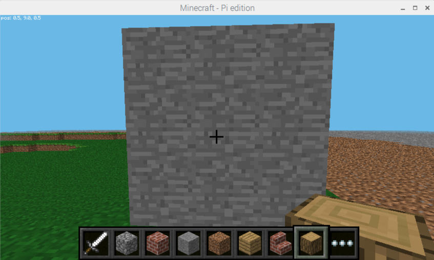

Minecraft is one fo the World’s most popular open-world building games. A free version of Minecraft is available for the Raspberry Pi; it also comes with a programming interface. This means you can write commands and scripts in Python code to build things in the game automatically. It’s a great way to learn Python!
The game you are going to create is called “Whack-a-Block”, inspired by the original arcade game “Whac-a-Mole”. The objective of the game is to whack (or hit with a sword) the blocks that light up as glowstone, and turn them back to stone. You will earn points for each block you turn back to stone and the game is over when all the blocks have been turned into glowstone.
To create this game you’re going to need to use Minecraft Pi Edition on the Raspberry Pi, and the Python 3 programming environment IDLE.
[[[idle-opening]]]
[[[minecraft-opening]]]
[[[minecraft-testing]]]
You can now begin creating your game. You can start with a fresh new Python script. Save it as whack_a_block.py
To begin with you’re going to need to know Steve’s position in the game. If you don’t know how to do this, then you can use the section below, or skip forward if you already know how to do this.
[[[minecraft-steves-position]]]
Start by importing the required modules.
from mcpi.minecraft import Minecraft from random import randint from time import sleep
Minecraft is needed to interact with Minecraft: Pi Editionrandint is used to create random intgerst (whole numbers)sleep is used to put delays into your programThen below your imports you can create a connection to Minecraft: Pi Edition.
mc = Minecraft.create()
The next step is to create the game board; this consists of 3x3 stone blocks, which will randomly turn into glowstone and light up.
The game board needs to be created just in front of the player, so the first step is to get the player’s tile position and save it as a variable. Call the variable pos.
Have a read through the Finding Steve’s Position in Minecraft section for a refresher on how to do this.
The method you need for fetching the player’s tile position is mc.player.getTilePos()
Have a look at this image and see if it any help to you.
To save the position of Steve as a variable, you can use the line pos = mc.player.getTilePos()
Have a look at this video showing you how to save the players positon.
The gameboard for Whack-a-block will be a 3x3 grid of blocks. These will need to be placed close to Steve’s position.
Use the section below to learn how to set multiple blocks in Minecraft using Python and skip to the next section if you already know how to do this.
[[[minecraft-setting-blocks]]]
You now have all the skills and knowledge you need to create your game board. You need to create a 3 x 3 block of stone, somewhere close to your player’s position. It should look something like this:

Try the following steps:
1. Get Steve’s position
2. Set some stone blocks so that they are 3 spaces away from Steve, and at the same height as him. The miidle blocks should be facing Steve directly.
Here are the coordinates you’ll need to set the blocks.
1. Steve’s position -1 on the x to Steve’s position + 1 on the x
2. Steve’s position on the y to Steve’s position + 2 on the y
3. Steve’s position + 3 on the z to Steve’s position + 3 on the z
Here’s the positions as they would appear in Python
~~~ python
pos.x - 1, pos.y, pos.z + 3,
pos.x + 1, pos.y + 2, pos.z + 3,
1
~~~
Have a look at this video showing you how to save the players positon.
Now that you have a gameboard for the player to use, you need to create the logic for the game itself.
To give the player a warning that the game is about to start, post a couple of messages to the chat window and put a delay into the program using sleep(seconds). The following code can be placed into your program after the initial gameboard has been created.
mc.postToChat("Get ready ...") sleep(2) mc.postToChat("Go")
Run the program again. You should see the game board appear directly in front of the player, and the messages “Get ready …” and “Go”.
To begin the next part of the program, you’ll need to create two new variables and set them both to the value of 0. blocksLit stores the number of blocks that have been “lit-up”. points will store the number of blocks that the player has managed to hit.
blocksLit = 0 points = 0
You now need to write your main game loop. To start off with, you’ll need to know a little bit about how you can generate random numbers in Python. Skip down to the section below, if you are already familiar with this.
[[[python-random]]]
Your program will need to loop until the game is over, or in this case until all the blocks are lit.
Create a while loop which will continue until the blocksLit variable is 9 (i.e. all the blocks are turned to glowstone). Next, put a small delay of 0.2 seconds into the program; otherwise it will run so fast, you won’t be able to whack any blocks!
From now on, the code will be indented under this while loop.
The next step is to randomly turn a block into glowstone. This is more difficult than it sounds: what happens if the block you randomly choose is already glowstone? Your code needs to be able to deal with this.
The method you will use is a really simple one. The code creates a random position, checks to see if that block is stone, and if it isn’t (i.e. it’s glowstone), it tries again and creates a new random position. The code will continue to do this until it finds a block which is still unlit.
Create a variable called lightCreated then set it to False; next, create a while loop which will continue until lightCreated is set to True. You should also increase the number of blocksLit by 1, to show that another block will be lit:
blocksLit = blocksLit + 1 lightCreated = False while not lightCreated:
Once a block is successfully turned to glowstone, lightCreated will be set to True and the loop will exit.
Inside this loop use randint(start, end) to create a random x (between -1 and 1) and y (between 0 and 2) position on the game board:
xPos = pos.x + randint(-1,1) yPos = pos.y + randint(0,2) zPos = pos.z + 3

Use getBlock(x,y,z) and an if statement to check if the block at the random position is STONE. If it is, set it to glowstone using setBlock(x,y,z,blockId) and make lightCreated = True; if this is not changed, the code will go back to the start of the loop and find another random position.
if mc.getBlock(xPos, yPos, zPos) == 1: mc.setBlock(xPos, yPos, zPos, 89) lightCreated = True
Note: Rather than using the ID numbers of blocks (e.g. stone = 1, glowstone = 89), you can use the block module, which holds all the block IDs and their names (e.g. 1).
Run the program by clicking Run > Run Module in IDLE or by pressing F5; you should see the game board appear. The stone blocks should then, one by one, turn into glowstone and the program should end when all nine are lit.
The player will whack blocks by hitting them (right-clicking) while holding a sword. The Minecraft API has functions which allow you to find out what blocks were hit; these are known as block hit events. Using the function events.pollBlockHits() you can get a list of the events that have occurred since it was last called, such as blocks which were hit.
You will use events to find out the position of the block which was hit, before using getBlock(x,y,z) to see if the block hit was glowstone. If it was, you will then use setBlock(x,y,z,blockId) to turn it back to stone, before reducing the number of blocks lit and increasing the player’s score.
Indented under the while blocksLit < 9 loop, create the following code to loop through the block hit events list:
for hitBlock in mc.events.pollBlockHits():
Note: The hitBlock variable holds the event which has happened. It contains lots of information, including which block was hit, what face was hit and who hit it. You can see this information in the Python shell by using print hitBlock.
Use getBlock(x,y,z), the hitBlock event data and an if statement to see if the block hit was glowstone. If it was, use setBlock(x,y,z,blockId) to set it back to stone before reducing the blocksLit variable and adding 1 to the player’s points:
if mc.getBlock(hitBlock.pos.x, hitBlock.pos.y, hitBlock.pos.z) == 89: mc.setBlock(hitBlock.pos.x, hitBlock.pos.y, hitBlock.pos.z, 1) blocksLit = blocksLit - 1 points = points + 1
Run the program. The game board should appear and this time when the blocks are lit, if you hit them by right-clicking with a sword, they should turn off.
The last step in the game is to let the player know it’s “Game Over” and to tell them how many points they scored. The very last line of the program should be:
mc.postToChat("Game Over - points = " + str(points))